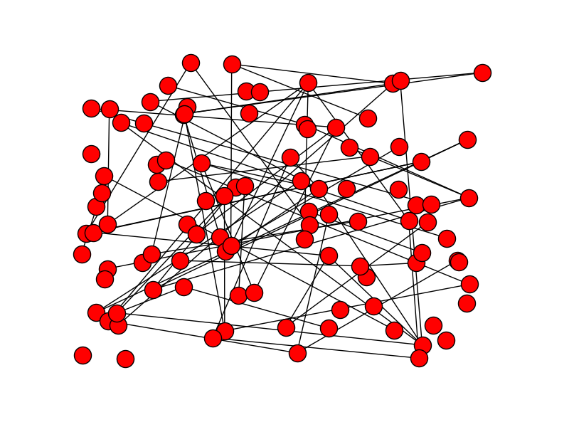

Basic programming
We use Python for this course.
Basic Python will do for the most part of this course.
If you are not used to Python (anymore), you are only one day away of catching up.
No idea what to say about this
Programming & This Course
We don’t need much programming for this course because we absolutely will be focused on the algorithms.
But …
The reality is that programming is absolutely essential.
!
Basic programming for this course
x = [1, 2, 3]
print "The middle number is %d" % x[1]
We need arrays as a fundamental data structure.
!
class Student:
name = "Unknown"
age = 18
def __init__(self, name):
self.name = name
jack = Student("Jack")
print "%s: %s" % (jack.name, jack.age)
We need objects.
!
i = 0
while i < 10:
print i
i += 1
for i in range(10):
print i
Various loops are needed.
!
def reverse_string(s):
reversed_s = ""
for c in s:
reversed_s += c
return reversed_s
We need functions, mostly to better organize the implementation of an algorithm.
! ============
We may need to rely on external Python libraries for data generation and visualization of algorithmic actions.

import networkx as nx
import matplotlib.pyplot as plot
G = nx.erdos_renyi_graph(100, 0.015)
nx.draw(G)
plot.save("random-graph.png")
!
The sorting problem
Input:
An array of elements: $x$ where the elements are to be compared by a comparator function:
$$f(x_1, x_2) \in \left[ \begin{array}{cc} -1 & x_1 < x_2 \\ 0 & x_1 = x_2 \\ 1 & x_1 > x_2 \end{array}\right.$$Output:
A permutation $y$ of the array of $x$, such that
$$\forall i,j\in[0, \mathrm{length}(y)],\quad i\leq j \implies y[i] \leq y[j]$$
- This is called comparison based sorting.
- The comparison function can be arbitrary, and it defines the ordering.
!
The sorting problem
Permutation $\pi : [0, n] \to [0, n]$ such that
$i\not= j\implies \pi(i)\not=\pi(j)$Given a sorting problem $(x, f)$, there can be multiple non-unique permutations that sorts $x$.
x = [3, 2, 2, 1]Stable sorting requires an additional condition on the permutation:
$$ \forall i,j\in [0, \mathrm{length}(x)],\ i < j\ \mathrm{and}\ f(x[i], x[j]) = 0 \implies \pi(i) < \pi(j) $$
!
Insertion sort
It’s a highly inefficient sorting algorithm.
It’s simple enough that:
- It’s intuitive.
- It can be fully analyzed relatively easily.
!
Insertion sort

Chapter 2, Figure 2.1 of textbook.
def insertion_sort(A):
for j in range(1, len(A)):
key = A[j]
i = j-1
while i >= 0 and A[i] > key:
A[i+1] = A[i]
i = i - 1
A[i+1] = key
!
Analysis of correctness
Intuition only takes us part way, not the whole way.
Sometimes, we can formally prove that an algorithm is correct.
But first, we need some machineries.
!
Loop invariance
Consider a loop:
total = 0
count = 0
for v in array:
total += v
count += 1
avg = total / count
Precondition of a loop: a statement that is always *true at the start of the loop.
Postcondition of a loop: a statement that is always true at by the end of the loop.
Loop invariance: a statement that is always true right at the end of each iteration of the loop.
count $\not=$ 0total$_{i+1} \geq$total$_i$Note: for loop-invariance, we can refer to the iteration index $i\geq 0$.
!
Correctness of INSERTION SORT by loop-invariance
def insertion_sort(A):
for j in range(1, len(A)):
key = A[j]
i = j-1
while i >= 0 and A[i] > key:
A[i+1] = A[i]
i = i - 1
A[i+1] = key
There are two loops, with while-loop nested in the for-loop.
!
Correctness of INSERTION SORT by loop-invariance
def insertion_sort(A):
for j in range(1, len(A)):
key = A[j]
i = j-1
while i >= 0 and A[i] > key:
A[i+1] = A[i]
i = i - 1
A[i+1] = key
Inner-loop invariance
iis an index such that
A[0 .. i]are all smaller thankey.A[i+2 .. j]are larger or equal tokey.A[i] = A[i+1]
Can we say anything about
A[j+1]toA[len(A)-1]?
!
Correctness of INSERTION SORT by loop-invariance
def insertion_sort(A):
for j in range(1, len(A)):
key = A[j]
i = j-1
while i >= 0 and A[i] > key:
A[i+1] = A[i]
i = i - 1
A[i+1] = key
Outer-loop invariance
The subarray
A[0 .. j]is sorted after the $j$-th iteration of thefor-loop.
Proof: We prove by induction on $j$.
Base case
$j=0$, trivially true
Induction
If
A[0 .. j-1]is sorted, by the inner-loop invariance, moving key toA[i+1]makesA[0 .. j]sorted.
!
Correctness of INSERTION SORT by loop-invariance
def insertion_sort(A):
for j in range(1, len(A)):
key = A[j]
i = j-1
while i >= 0 and A[i] > key:
A[i+1] = A[i]
i = i - 1
A[i+1] = key
Theorem:
The
insertion_sortalgorithm always correctly sorts the input array.
Proof:
By the outer-loop invariance, by the end of the last iteration, with $j=$
len(A)-1, the entire arrayA[0 .. len(A)-1]is sorted.
!
Performance analysis
!
Every statement takes the same amount of time.
This is not exactly correct, but it is accurate enough to gauge the performance of algorithms.
Corollary
We measure the number of lines executed by the program before an array is completely sorted by
insertion_sort.$T_\mathrm{LOC}(\mathrm{length}(A)) \Rightarrow T(n)$
!
def insertion_sort(A):
for j in range(1, len(A)):
key = A[j]
i = j-1
while i >= 0 and A[i] > key:
A[i+1] = A[i]
i = i - 1
A[i+1] = key
Best case analysis
Worst case analysis
Average case analysis
!
def insertion_sort(A):
for j in range(1, len(A)):
key = A[j]
i = j-1
while i >= 0 and A[i] > key:
A[i+1] = A[i]
i = i - 1
A[i+1] = key
Worst case analysis
Let $n = \mathrm{length}(A)$
The outer-loop always iterates $n$ times.
The inner loop iterates in the worst case $j$ times.
$$ T(n) = \sum_{j=0}^n j = \frac{n(n-1)}{2}$$
!
insert_sort is a pretty inefficient algorithm.
| n | T | time (1M LOC/s) |
|---|---|---|
| 10 | 45 | 45 $\mu s$ |
| 100 | 4950 | 5 $ms$ |
| 1000 | 499500 | 0.5 $s$ |
| 1000000 | 499999500000 | 5.9 days |
A more efficient algorithm (to be discussed later):
| n | T | time (1M LOC/s) |
|---|---|---|
| 10 | 23 | 23 $\mu s$ |
| 100 | 460 | 0.46 $ms$ |
| 1000 | 6907 | 6.9 $s$ |
| 1000000 | 13815510 | 13.8 $s$ |
!
Summary
- INSERTION sort
- Analysis of correctness by loop-invariance
- Performance analysis by counting lines executed
Text: 2.1, 2.2,